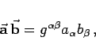
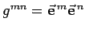
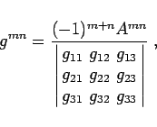
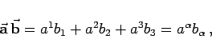
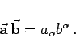

Inhalt Index DeskTop Bronstein

 Geometrie Vektoralgebra und analytische Geometrie Vektoralgebra Kovariante und kontravariante Koordinaten eines Vektors
Geometrie Vektoralgebra und analytische Geometrie Vektoralgebra Kovariante und kontravariante Koordinaten eines Vektors


Die Darstellung eines skalaren Produkts zweier Vektoren durch seine kontravarianten Koordinaten liefert Formel (3.295). Die entsprechende Formel für kovariante Koordinaten lautet
|  | (3.305) |
wobei  die metrischen Koeffizienten im System mit den reziproken Vektoren sind. Ihr Zusammenhang mit den Koeffizienten gmn lautet
|  | (3.306) |
wobei Amn die Unterdeterminante der im Nenner stehenden Determinante ist; sie entsteht durch Streichen der Zeile und Spalte des Elements gmn.
Wenn der Vektor  durch kovariante Koordinaten gegeben ist, der Vektor
durch kovariante Koordinaten gegeben ist, der Vektor  dagegen durch kontravariante Koordinaten, dann ist ihr Skalarprodukt gleich
dagegen durch kontravariante Koordinaten, dann ist ihr Skalarprodukt gleich
|  | (3.307a) |
und analog gilt
|  | (3.307b) |